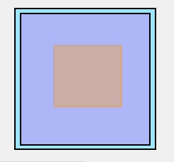
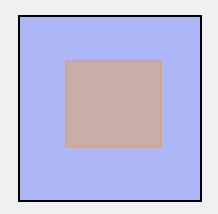
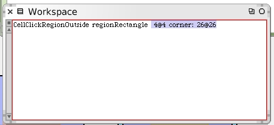
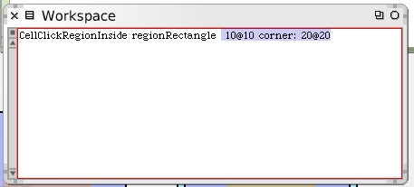
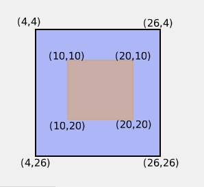
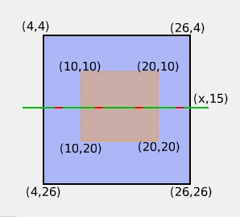
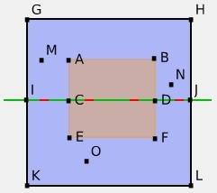

We need to calculate the test points for the rotation regions. We'll need these for the next part of our unit test. Let's take a look at the mirror cell again without the mirror and showing only the inside and outside regions.
We can ignore the "ignore region" and focus on the "inside" and "outside" click regions.
We can easily obtain the coordinates of the corners for each click region.
 
Now we imagine a line dividing the regions into half.
We can now describe several points of interest for testing.
|  |
|
We're treating points that fall on the dividing line as if they belong to the upper half.